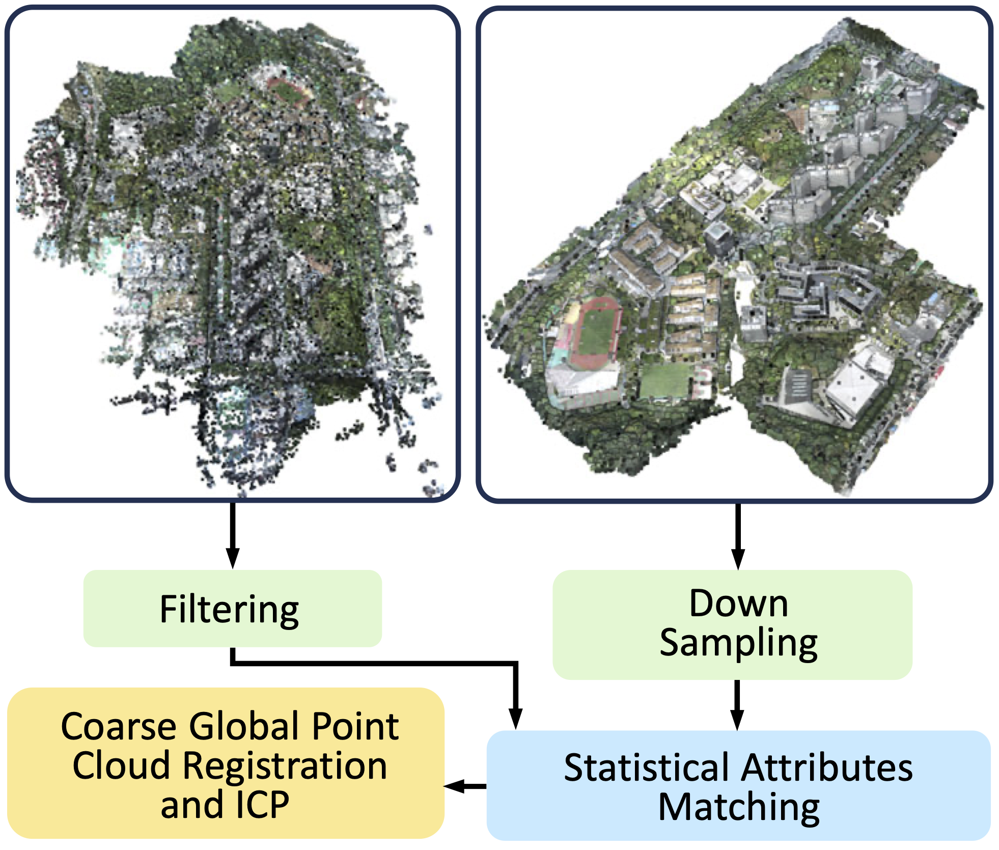

| Size in km2 | Image Number | Points Number | DJI Raw Data Size in GB | |
|---|---|---|---|---|
| Lower Campus | 1.020267099 | 670 | 79,767,884 | 12.5 |
| Upper Campus | 0.923096497 | 715 | 94,218,901 | 13.5 |
| SMBU | 0.908184476 | 563 | 283,31,405 | 16.2 |
| SZIIT | 1.557606058 | 1215 | 58,979,628 | 22.3 |
| HAV | 0.815080080 | 424 | 26,759,799 | 7.8 |
| LFLS | 1.466664729 | 1106 | 98,547,710 | 19.8 |
| Total | 6.668 | 4693 | 627,500,327 | 92.1 |
Abstract
We introduce a novel large-scale scene reconstruction benchmark using the newly developed 3D representation approach, Gaussian Splatting, on our expansive U-Scene dataset. U-Scene encompasses over one and a half square kilometers in the first version and 3.5 square kilometers in the second version, featuring a comprehensive RGB dataset coupled with LiDAR ground truth. The dataset size is continually growing and now includes 6 scenarios. For data acquisition, we employed the Matrix 300 drone equipped with the high-accuracy Zenmuse L1 LiDAR, enabling precise rooftop data collection. The detailed data acquisition protocol is appended in the supplementary material. It contains drone assembly, controller path planning, controller assembly, safety and protection, RTK Help, Drone Data Post-Processing, and many other details. U-Scene, developed under the auspices of the Chinese University of Hong Kong, Shenzhen MSU-BIT University, SZIIT, and auxiliary residential area, offers a unique blend of urban and academic environments for advanced spatial analysis. Our evaluation of U-Scene with Gaussian Splatting includes a detailed analysis across various novel viewpoints. We also juxtapose these results with those derived from our accurate point cloud dataset, highlighting significant differences that underscore the importance and innovation of our work.

Dataset Introduction
Our dataset is now publicly available via the link provided above.
Our enlarged dataset is divided into six main parts. The first
part is the top portion of this graph, referred to as SZIIT (The
Shenzhen Institute of Information Technology). The second row is
called the Lower Campus, an abbreviation for the Chinese University
of Hong Kong, Lower Campus. The third row displays the Upper Campus
of CUHKSZ, and the SMBU (Shenzhen MSU-BIT University) Campus. As
for the last row, it contains two auxiliary residential areas
named He Ao Village and LFLS(Longgang Foreign language school) We utilized highly accurate LiDAR
to collect the dataset, covering a range of more than 1.5 km^2. To
view the dataset from different angles, one can use the embedded
Youtube video provided. We store the dataset in Ply format on the
OneDrive share point link, with coordinates in WGS 84/ UTM zone 50N:
EPSG:32650 geographic standard. To further facilitate usage in computer
vision and graphics, we will also provide COLMAP datasets and aligned point clouds.

Dataset Information
Our dataset provides essential information for quality control and multi-modal analysis and visualization. By
using
professional tools such as DJI Terra, one can observe three important properties critical for quality control:
Reflectivity, Height,
and Return. Graph (a) in this figure illustrates reflectivity, which measures the amount of light reflected
back to the LiDAR
sensor from surfaces or objects. Meanwhile, height, shown in graph (b), represents the building's altitude
relative to the drone's
takeoff altitude. The return, presented in graph (c), indicates the number of light returns detected by the
LiDAR. Since our
analysis filters out all data except those with at least two returns, moving objects, represented by red dots,
will be excluded.
More visualization results can be explored in our dataset or in the supplementary materials.
Table 1. This table provides detailed comparisons between our dataset and previously collected datasets. "Ptgy" stands for Photogrammetry, which is a non-LiDAR-based data acquisition method. Only real scenes are included in this table.
| Dataset | Acquisition | Data Type | Area/Length | Image Number | Points/Triangular | scene |
|---|---|---|---|---|---|---|
| KITTI | Car Camera/Lidar | PC/Image | 39.20km | 300K | 4549M | 1 |
| BlockNeRF | Car Camera | Image | - | 12k | - | 1 |
| MILL 19 | UAV Camera | Image | - | 3.6k | - | 2 |
| UrbanBIS | UAV Ptgy | PC/Mesh/Image | 10.78km² | 113.3k | 2523.8M/284.3M | 5 |
| DublinCity | UAV Lidar | PC/Image | 2.00km² | - | 260M | 1 |
| Hessigheim | UAV Camera/Lidar | PC/Mesh | 0.19km² | - | 125.7M/36.76M | 1 |
| UrbanScene3D | UAV Camera/Lidar | PC/Image | 3.03km² | 31k | 120M | 6 |
| GauU(Ours) | UAV Camera/Lidar | PC/Image | 6.67km² | 4.6k | 627.5M | 6 |
Table 2. This table presents detailed coverage of scene reconstruction. We ensure that the size of each scene is maintained at approximately 1 km². This constraint limits the variation in lighting effects caused by the sun. The density of our point cloud is 20 cm per point. The raw data consists solely of DJI raw data and does not include the post-processed point cloud from the DJI Terra. The "Avg Height" denotes the average height of the drone's flight path relative to the altitude from which the drone took off. This height is consistently higher than that of the tallest local building. It is important to note that the maximum effective distance for LIDAR detection should be less than 250 m.
| Scene | Area in km² | Image Number | Points Number | Raw Data in GB | Avg Height in m | Resolution |
|---|---|---|---|---|---|---|
| Lower Campus | 1.020 | 670 | 79,767,884 | 12.5 | 120 | 5472 × 3648 |
| Upper Campus | 0.923 | 715 | 94,218,901 | 13.5 | 120 | 5472 × 3648 |
| HAV | 0.815 | 424 | 26,759,799 | 7.8 | 120 | 5472 × 3648 |
| LFLS | 1.467 | 1106 | 98,547,710 | 19.8 | 150 | 5472 × 3648 |
| SMBU | 0.908 | 563 | 283,31,405 | 16.2 | 150 | 5472 × 3648 |
| SZIIT | 1.557 | 1215 | 58,979,628 | 22.3 | 136 | 5472 × 3648 |
| Total | 6.668 | 4693 | 627,500,327 | 92.1 | Nan | Nan |
Table 3. This table displays the results obtained when testing our dataset with different methods, including two NeRF-based methods and 3DGS (3D Gaussian Splatting). We measured the training time in terms of GPU count multiplied by training time in minutes. For training and evaluating the Gaussian Splatting results, we used the official implementation of Gaussian Splatting. Meanwhile, the NeRF Studio implementation was utilized for Instant-NGP and NeRFacto to conduct training and evaluation.
| Method | Gaussian Splatting | Instant NGP | NeRFacto | |||||||||
|---|---|---|---|---|---|---|---|---|---|---|---|---|
| Scene | PSNR ↑ | SSIM ↓ | LPIPS ↓ | Time (GPU·min) | PSNR ↑ | SSIM ↑ | LPIPS ↓ | Time (GPU·min) | PSNR ↑ | SSIM ↑ | LPIPS ↓ | Time (GPU·min) |
| Lower Campus | 24.76 | 0.735 | 0.343 | 58 | 20.76 | 0.516 | 0.817 | 220 | 17.70 | 0.455 | 0.779 | 1692 |
| Upper Campus | 25.49 | 0.762 | 0.273 | 64 | 20.25 | 0.522 | 0.816 | 392 | 18.66 | 0.448 | 0.734 | 1704 |
| HAV | 26.14 | 0.805 | 0.237 | 62 | 20.79 | 0.511 | 0.792 | 268 | 16.95 | 0.399 | 0.727 | 1788 |
| LFLS | 22.03 | 0.678 | 0.371 | 71 | 18.64 | 0.453 | 0.856 | 348 | 15.05 | 0.364 | 0.879 | 1780 |
| SMBU | 23.90 | 0.784 | 0.248 | 63 | 18.37 | 0.507 | 0.810 | 252 | 16.61 | 0.405 | 0.682 | 1716 |
| SZIIT | 24.21 | 0.749 | 0.326 | 64 | 19.64 | 0.551 | 0.820 | 276 | 17.28 | 0.462 | 0.781 | 1732 |
| Avg | 24.42 | 0.752 | 0.300 | 63.7 | 19.74 | 0.510 | 0.815 | 292.7 | 17.04 | 0.422 | 0.764 | 1735.3 |
Table 4. Chamful Distance Between Downsampled Lidar and Reconstructed Point Cloud
| Method | 3DGS | Instant NGP | NeRFacto | |||
|---|---|---|---|---|---|---|
| Scene | Mean ↓ | STD ↓ | Mean ↓ | STD ↓ | Mean ↓ | STD ↓ |
| Lower Campus | 0.079 | 0.207 | 0.123 | 0.378 | 0.067 | 0.198 |
| Upper Campus | 0.096 | 0.312 | 0.082 | 0.260 | 0.050 | 0.170 |
| HAV | 0.124 | 0.305 | 0.177 | 0.497 | 0.065 | 0.205 |
| LFLS | 0.248 | 0.192 | 0.228 | 0.314 | 0.277 | 0.245 |
| SMBU | 0.186 | 0.440 | 0.153 | 0.458 | 0.066 | 0.240 |
| SZIIT | 0.064 | 0.168 | 0.136 | 0.438 | 0.034 | 0.110 |
| Avg | 0.133 | 0.271 | 0.149 | 0.391 | 0.093 | 0.194 |

Data Collection Protocol
The dataset prepared for input into the neural field
and Gaussian Splatting typically consists of camera positions
and images in COLMAP format. The Structure from Motion
(SfM) algorithm implemented in COLMAP initializes camera
positions randomly, which may not align with LiDAR data
in WGS 84 coordinates. This discrepancy poses a significant
challenge for geometric alignment measurement and multimodal fusion algorithms. When inputs are in two
different
coordinate systems, further validation becomes impractical.
To address this, we propose a straightforward yet effective
method for statistical scale matching to align LiDAR point
clouds with camera positions. This approach is crucial for the
construction of our dataset.

This figure shows the design of the drone routing path. The white and orange dots represent the positions
where the
drone took pictures. The overall path for a scene is shown in Graph (a), which is composed of several
micro-blocks. One such
micro-block, highlighted in orange, is detailed in Graph (a). Zooming into this orange micro-block reveals
Figure (b). The total
path length of each micro-block is limited by the battery life of the DJI Matrice 300, as well as the power
consumption of the
LiDAR in windy conditions. For safety reasons, each micro-block typically covers an area of 350 x 350 square
meters. Each
micro-block has five routing paths, providing different angles for photography, as illustrated in Figure (c).
The first routing
path offers a Bird's Eye View (BEV), while the subsequent four paths alter the camera's orientation by 45
degrees towards the
horizontal plane. These four paths' camera orientations are forward, backward, rightward, and leftward,
respectively.
Point Cloud Data Preview
Detailed Point Properties Preview
Point Cloud Data Quantitative Scale
Download Dataset
If you are interested in the data, please first obtained the license at the dataset link provided above and send email to the correspondance according to the guidance written in the license.
BibTex
@misc{xiong2024gauuscene,
title={GauU-Scene V2: Assessing the Reliability of Image-Based Metrics with Expansive Lidar Image Dataset Using 3DGS and NeRF},
author={Butian Xiong and Nanjun Zheng and Junhua Liu and Zhen Li},
year={2024},
eprint={2404.04880},
archivePrefix={arXiv},
primaryClass={cs.CV}
}
Acknowledgement
Disclaimer
According to the Law of People Republic of China, the geography measurement information classified level conent:
https://www.gov.cn/zhengce/zhengceku/2020-07/08/5525075/files/08e817f622814c4799255f2464bf9ed5.pdf
The dataset we aquired is not violet any classified information law.
The data we aquired is within 25 km² consequtive area
The data we aquired contain no military zone.
根据测绘地理信息管理工作国家秘密目录，我们的项目并没有违反保密法
我们的数据没有连续25平方公里
我们的数据没有包含军事禁区
In case of the emergency and military requirment I quote regulation 12 and 26:
对于条例12和26， 我引述：
Regulation 12
条例12
"与上述机密级条款涉及的要素、空间精度和范围相当的其它测绘地理信息成果省级以上自然资源主管部门批准的测绘成果保管单位及用户；战区、军兵种以上军队测绘部门批准的军事测绘成果保管单位及用户；战区、军兵种以上军事设施建设部门批准的军用土地测绘成果保管单位及用户"
Regulation 26
条例 26
"与上述秘密级条款涉及的要素、空间精度和范围相当的其它测绘地理信息成果:县级以上自然资源主管部门批准的测绘成果保管单位及用户；战区、军兵种以上军队测绘部门批准的军事测绘成果保管单位及用户；战区、军兵种以上军事设施建设部门批准的军用土地测绘成果保管单位及用户"
"本规定第 12 项、第 26 项中“其它测绘地理信息成果”的定密标准和管理范围，由自然资源部会同国家保密局，商军委联合参谋部共同确定"
We are not aware how the regulation is set, please direct contact Butian Xiong Mainland China Phone:
18995627598
如果违反条例12或26，我们并不知情。如果要处理数据，或者下架数据最快可拨打熊步天，18995627598，中国大陆的电话。